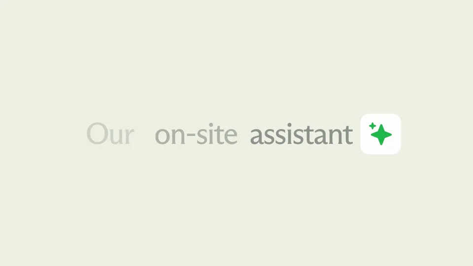
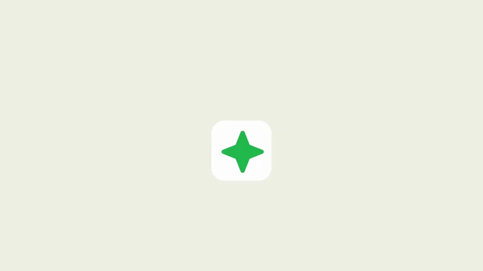
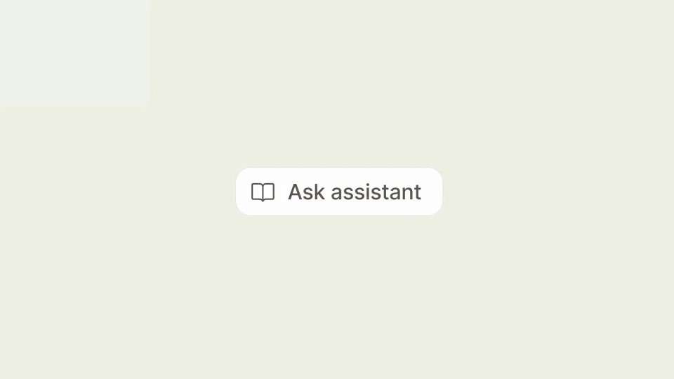
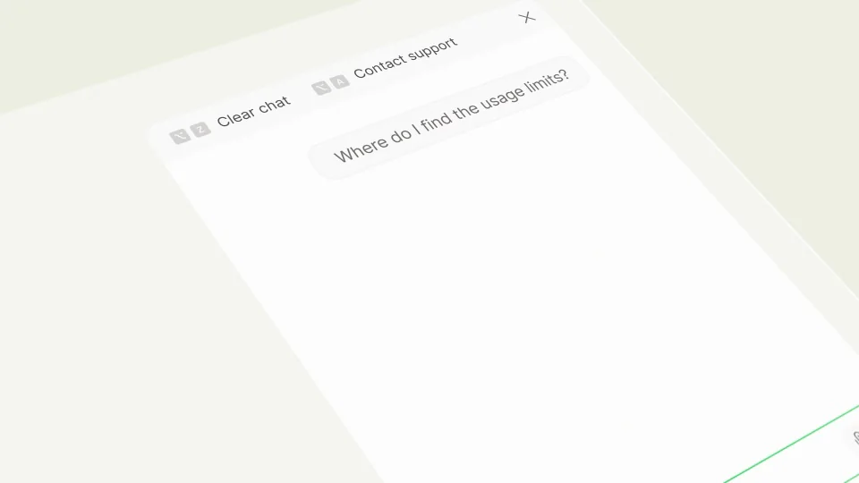
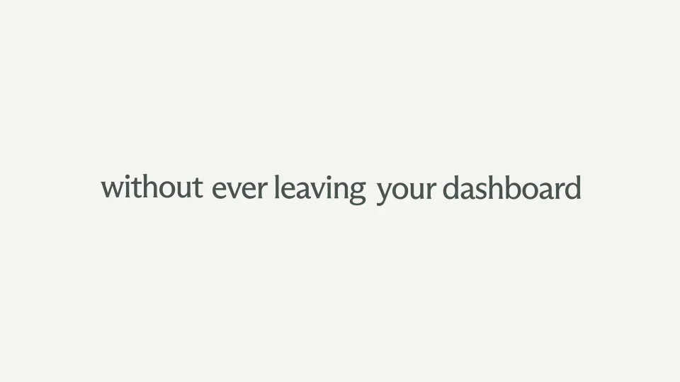

Mintlify / V394
Mintlify Widget — an embedded agent that supports your users anywhere
用一个轻量入口连接提问、回答和资料来源，让助手功能自然嵌入现有页面。
构图与编排 可播放 · 可替换内容
整体编排规则示例
查看 HTML 源码
<!doctype html><html lang="zh-CN"><meta charset="utf-8"><meta name="viewport" content="width=device-width,initial-scale=1"><title>Mintlify Widget — an embedded agent that supports your users anywhere · sequence</title><style>html,body{margin:0;width:100%;height:100%;overflow:hidden;background:#eef0e6}canvas{display:block;width:100%;height:100%;object-fit:contain}</style><body data-mode="sequence"><canvas width="1000" height="600"></canvas><script src="data.js"></script><script src="common.js"></script><script src="scene.js"></script><script src="bridge.js"></script></body></html>画面元素星形助手标记嵌入代码卡悬浮入口对话面板来源列表
MOTION LANGUAGE
动作与构图
局部动作 · 构图规则
01
先交代入口，再演示操作

米绿背景上保留小尺度助手标记，文字从标记两侧接续。代码卡只作安装能力的短说明，避免占据整段。
按钮和输入框沿用相同圆角，绿色只标记交互焦点。
02
一个按钮展开成对话面板
一个按钮展开成对话面板规则示例
查看 HTML 源码
<!doctype html><html lang="zh-CN"><meta charset="utf-8"><meta name="viewport" content="width=device-width,initial-scale=1"><title>Mintlify Widget — an embedded agent that supports your users anywhere · sequence</title><style>html,body{margin:0;width:100%;height:100%;overflow:hidden;background:#eef0e6}canvas{display:block;width:100%;height:100%;object-fit:contain}</style><body data-mode="clip" data-start="7.8" data-end="11.5"><canvas width="1000" height="600"></canvas><script src="data.js"></script><script src="common.js"></script><script src="scene.js"></script><script src="bridge.js"></script></body></html>先拉开容器，再出现建议问题和输入框；提问提交后留出回答区。镜头靠近面板时保持阅读方向。
03
答案之后给出可展开的来源
答案之后给出可展开的来源规则示例
查看 HTML 源码
<!doctype html><html lang="zh-CN"><meta charset="utf-8"><meta name="viewport" content="width=device-width,initial-scale=1"><title>Mintlify Widget — an embedded agent that supports your users anywhere · sequence</title><style>html,body{margin:0;width:100%;height:100%;overflow:hidden;background:#eef0e6}canvas{display:block;width:100%;height:100%;object-fit:contain}</style><body data-mode="clip" data-start="14" data-end="16.8"><canvas width="1000" height="600"></canvas><script src="data.js"></script><script src="common.js"></script><script src="scene.js"></script><script src="bridge.js"></script></body></html>来源收在同一组列表里，光标依次移动时只高亮当前行。完成演示后收回入口，留下品牌。
04
替换场景内容
用户问题、回答与来源应互相对应。迁移到其他产品时，保留单入口和完整问答链。
SEQUENCE
段落与节奏
点击段落，定位到上方编排示意。




画面参考 · 离散静帧
KEEP THE RELATIONSHIPS
制作其他主题
- 替换助手品牌、用户问题与资料来源；保留入口→提问→回答→查来源的因果链。
- 一次只展示一个短问题，回答控制在4–6行，资料来源保留三项左右。
制作约束
星形助手标记 / 嵌入代码卡 / 悬浮入口 / 对话面板 / 来源列表
- 先用一个小标记承接两句文案，再切入代码卡与真实使用过程。
- 按钮展开后保持输入框、回答和来源的层级；倾斜镜头只用于突出当前操作。
- 来源列表按行高亮，与光标移动同步；操作结束再回到简短主张。